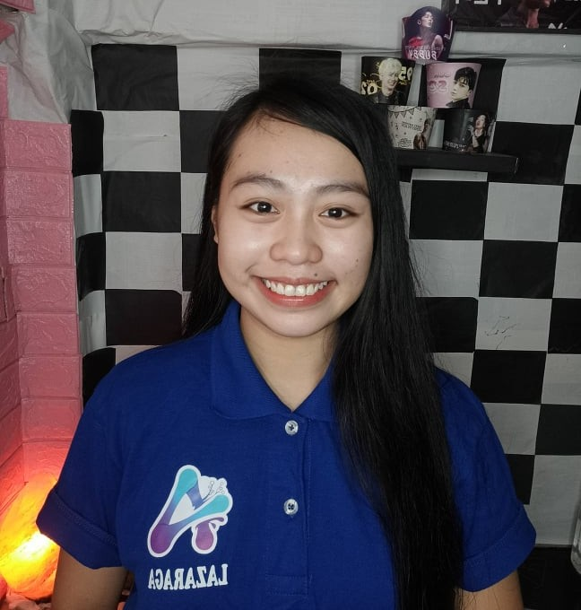

S.Y. 2020-2021 ~ AIM Officers





It was established in 1998 by its founding chairman Eli Soriano. Currently, Dr. Daniel Razon serves as the president. It offers pre-school, elementary and high school to its students since 1998 then college was started in 2005 offering its initial six technical courses. In 2010, the college established its first branch in Caloocan which eventually becomes the main branch of the institution. The year 2011 pave its way to establish its foreign campuses in Ghana and Liberia countries both in Africa. At present, La Verdad Christian College holds the title as the only educational institution that provides free uniforms, instructional materials and meals since 2009 as part of its full-grant scholarship program to deserving students. A Song Of Praise Music Festival tapes its weekly and monthly finals episodes at La Verdad Christian College auditorium in Caloocan campus.